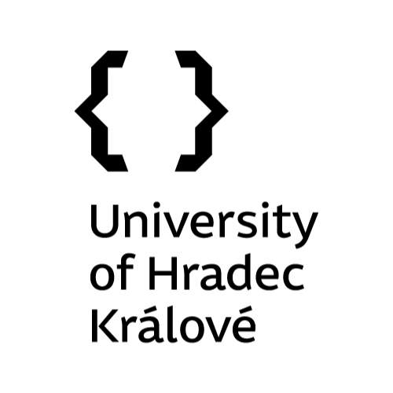
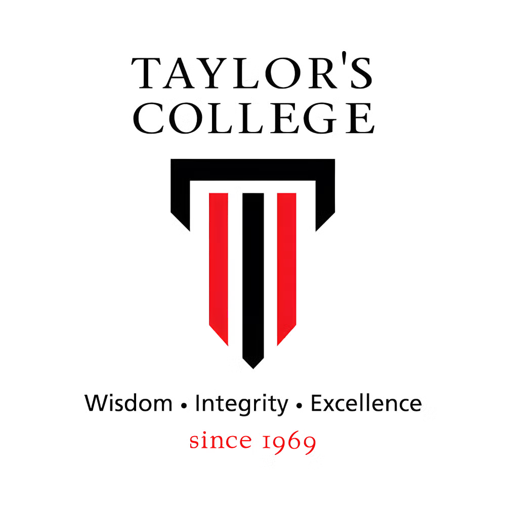

Taylor’s University
Bachelor of Business (Honours), specialising in Digital Marketing
3.86/4.00WCGPADean’s ListAcademic recognition
DIGITAL MARKETING · CONTENT · IDEAS
I’m Xi Mun — a digital marketing graduate who brings together creative content, audience insight and a hands-on instinct for getting things done.
A LITTLE CONTEXT
I like finding the human story inside a business problem — then turning it into something people want to watch, use or be part of.
My experience spans social media, customer-facing roles, event coordination and product concepts. I’ve grown an aquatics shop’s TikTok organically, supported events at The RuMa, and worked with teams across Europe. I’m especially drawn to digital entertainment, technology and the ways thoughtful content can build community.
I enjoy taking on challenges and adapting to new environments. I integrate quickly into different teams, perform well under pressure, and communicate effectively across cultures. I value efficiency, execution and attention to detail, with a strong preference for structured and organised work. I am proactive in planning tasks, prioritising responsibilities and monitoring progress to ensure work is completed efficiently and to a high standard.
LANGUAGES
Languages I use across work, study and everyday life.
A FEW THINGS I’VE MADE
A mix of ideas, experiments and real-world projects.
Click a card to take a closer look.
WHERE I’VE BEEN
Different rooms, different people.
One thing in common: I like making things work.
LEARNING THAT SHAPED MY WORK
Business foundations, digital marketing focus and an international exchange.
Bachelor of Business (Honours), specialising in Digital Marketing

Erasmus+ International Student Exchange Programme · Czech Republic

Foundation in Business
Science Stream
WHAT I BRING
A practical mix of creative production, analysis and people skills.
MILESTONES ALONG THE WAY
Recognition from study, international exchange and the arts.
A MAP OF THE PLACES THAT SHAPED ME
Every place leaves a little piece of itself in me.
AGE 21 · PLACES I VISITED
Select a place to focus the map. These are destinations from the same exchange chapter, not a verified route order.
The arcs illustrate the Malaysia–Europe chapter and the return to Malaysia; they are conceptual connections, not recorded travel paths. European places are shown without an invented order.
PEOPLE I’VE WORKED WITH
Professional references from retail, hospitality and aquatics.
Store Manager · Tory Burch, Valiram Group
WhatsApp · +60 10-656 1136 ↗Colleague · The RuMa Hotel and Residences
WhatsApp · +60 11-1094 8680 ↗Employer · Sandra Baumann’s Weingemeinschaft, Switzerland
WhatsApp · +41 76 422 7474 ↗Current Employer · Star Sea Aqua Zone 3
WhatsApp · +60 16-535 2227 ↗HAVE A GOOD ONE IN MIND?
Whether it’s a role, a collaboration or a project that needs a fresh perspective — I’d love to hear about it.